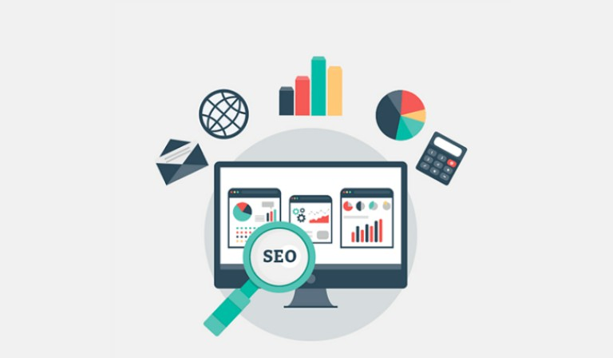

HERRAMIENTAS DIDÁCTICAS PARA TRABAJAR CON LA WEB Y SU ENTORNO
POSICIONAMIENTO WEB
Es un conjunto de técnicas aplicadas en las páginas web para lograr mejorar su posición y visibildiad,
quedando así como principal resultado en las primeras busquedas de los navegadores.
Es importante el posicionamiento web ya que tiene más visibilidad tu web, es buena inversión
a largo plazo, rentabiliza tu web, construye confianza y credibilidad.
POSICIONAMIENTO WEB SEO ON-PAGE:
Son técnicas usadas para mejorar el posicionamiento de la página web, tales como:
-Mejorar la velocidad y optimización de la web
-Buena estructura de etiquetas HTML
-Optimización de imagenes
-Experincia del usuario
POSICIONAMIENTO WEB SEO OFF-PAGE:
Técnicas llevadas a cabo fuera de la página web, tales como:
-Marketing
-Uso de redes sociales
-Registro de directorios
ITEMS PARA TENER UN BUEN POSICIONAMIENTO WEB
-Optimar la página web
-Escribir contenido importante o relevante para los lectores en el buscador
-Crear contenido de calidad
-Recursos gráficos en la página
-Poner información unicamente de interés
-Fidelizar y conseguir tráfico recurrente
VENTAJAS
-No conlleva ningún costo económico
-Aumenta el tráfico
DESVENTAJAS
-No se garantizan los resultados
-No tienen resultados inmediatos

REFERENCIAS BILBIOGRÁFICAS
-Capella,M. (4 de junio,2020). Posicionamiento web: estar en posición 1 en 9 pasos. Inboundcycle. Recuperado de:
https://www.inboundcycle.com/blog-de-inbound-marketing/como-posicionar-mi-web-5-pasos-para-ser-top-1-en-google
-Acibeiro,M. (22-08-2018). ¿Qué es el posicionamiento SEO y por qué es tan importante?. GoDaddy. Recuperado de:
https://es.godaddy.com/blog/que-es-posicionamiento-seo/
-Cardona, L. (17 de septiembre 2020). ¿Qué es el SEO? Guía de posicionamiento web. Cybercllick. Recuperado de:
https://www.cyberclick.es/que-es/seo
-Ventajas y desventajas del SEO. Comusys. Recuperado de:
https://www.comusys.com/blog/ventajas-y-desventajas-del-seo/